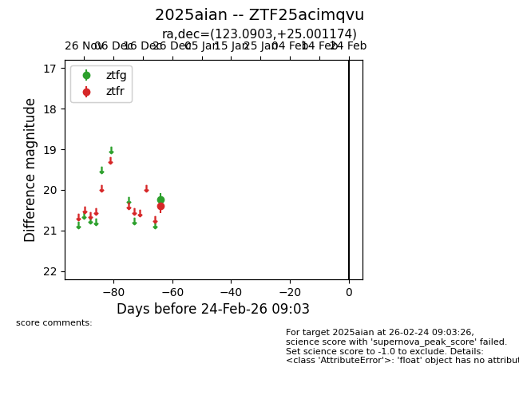
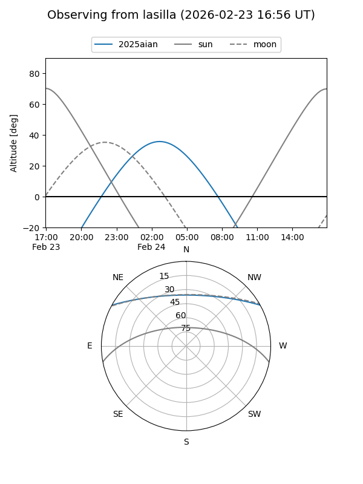
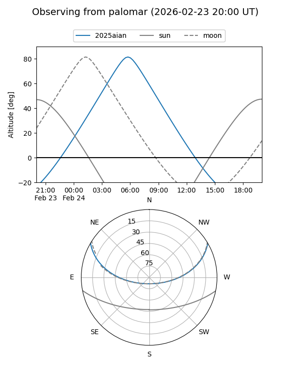

2025aian
Target 2025aian at 2025-12-24 17:30
Aliases and brokers:
FINK: fink-portal.org/ZTF25acimqvu
Lasair: lasair-ztf.lsst.ac.uk/objects/ZTF25acimqvu
ALeRCE: alerce.online/object/ZTF25acimqvu
TNS: wis-tns.org/object/2025aian
YSE: ziggy.ucolick.org/yse/transient_detail/2025aian
alt names
ZTF25acimqvu (ztf,fink_ztf)
2025aian (tns,yse)
Coordinates:
equatorial (ra, dec) = 123.0903,+25.00117
equatorial (HMS+DMS) = 08:12:21.67,+25:00:04.23
galactic (l, b) = (197.5945,+28.14072)
Flags:
Photometry:
last ztfg=20.24, ztfr=20.39
1 ztfg, 1 ztfr detections
Lightcurve

Visibility


Additional plots